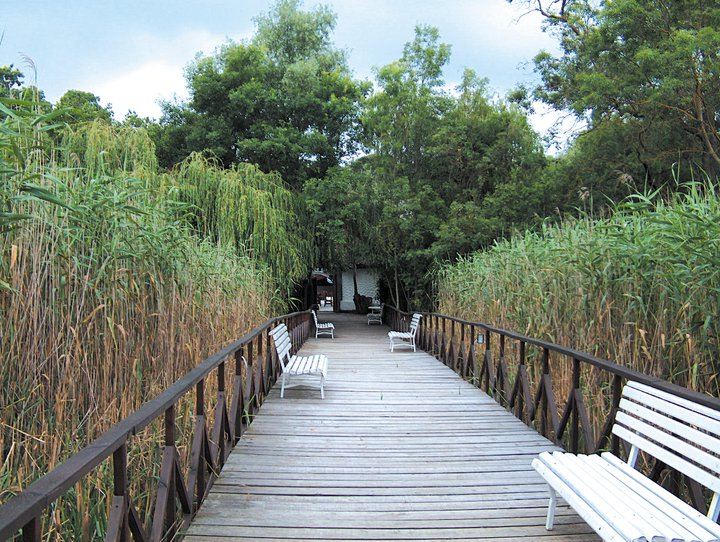
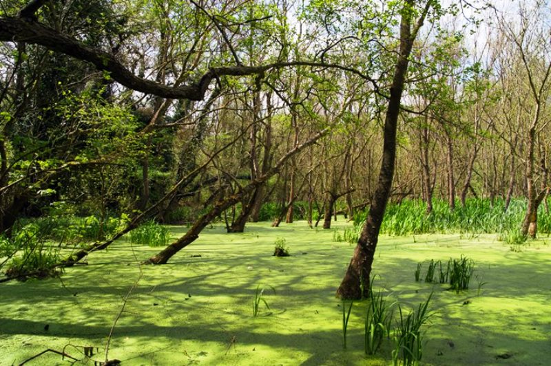
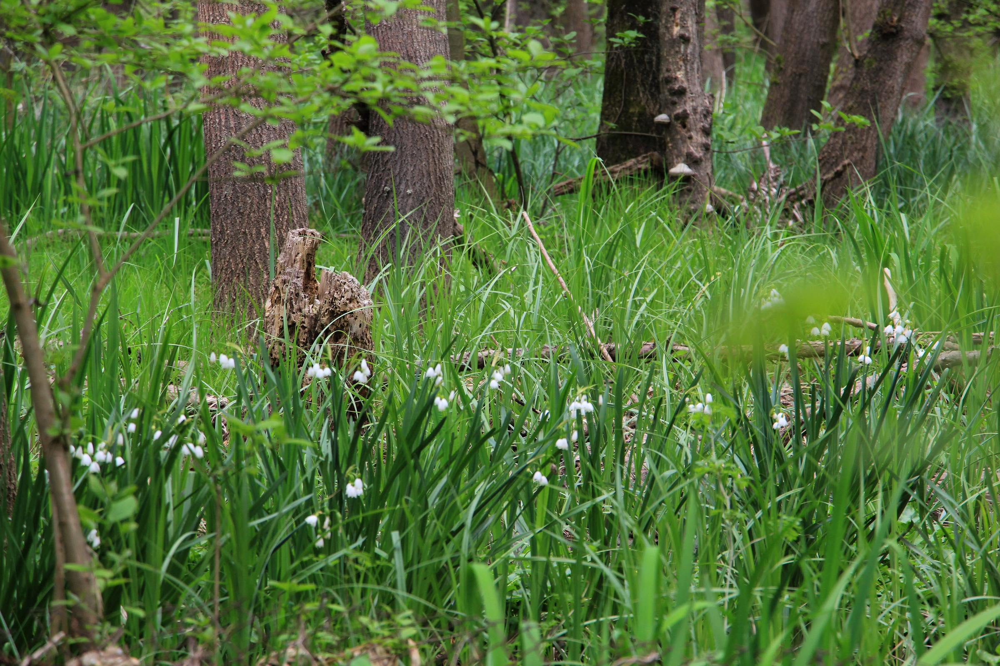
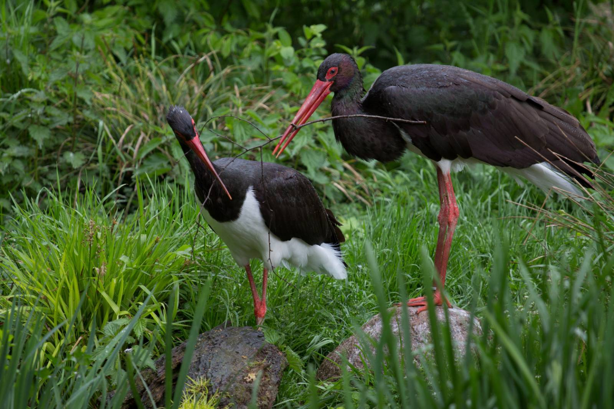

За резервата
Резерват "Балтата" се намира в района на село Кранево, община Балчик, и обхваща най-долното течение на река Батова точно до курорта курорта Албена. Резерватът се намира на около 11км от град Балчик.
Приказният национален парк Балтата е поддържан резерват, което по смисъл означава, че представлява екосистема, включваща редки и/или застрашени диви растителни и животински видове и местообитанията им. Биоразнообразие, което се простира на над 205 хектара земя. Не е тайна, че обновеният резерват Балтата примамва природолюбителите със завършеният туристически еко маршрут между Албена и Кранево. В националният парк ще откриете две еко пътеки до две кули за наблюдение на птици и животни. Резерватът обхваща най-северно разположената лонгозна гора в България, но и в Европа.
За лонгозните гори
Лонгозните гори представляват крайречни гори с гъсто разположени дървета, а възникването им се свързва със специфични климатични, хидрологични, исторически и флорогеографски условия. Характерни са за условията на преходно-континентален и средиземноморски климат с мека и влажна зима. Различното на лонгозна гора като Балтовската от останалите крайречни гори в България е това, че в нея могат да се срещнат някои вечнозелени и топлолюбиви видове.
При пролетните разливания на реките се формира различен по дълбочина воден слой, който след около 1 – 1,5 месеца постепенно се оттича в реката и през лятото хидрологичното им подхранване се осъществява основно от високите подпочвени води. Това и разположението на национален парк Балтата - по устието на река Батова, като два пъти в годината при пролетното пълноводие и есенното покачване на водите, тя излиза от своето корито и залива (удавя) гората. Красива и магическа гледка, показваща колко необятна и пъстра може да бъде природата.
Флора
В района има над 260 вида висши растения, като 28 вида от тях са защитени. Съчетанието на светлолюбиви и сенколюбиви дървета и храсти придават на горите етажиран вид, като най-високо (на 30–35 м) се извисяват двата неразделни дървесни вида – полски бряст и остролистен ясен. Заедно с тях се срещат летен дъб, полски клен, дива круша, обикновен габър, черна елша, бяла топола, бяла върба.
Един от защитените видове срещани в резервата е блатното кокиче. То се употребява като суровина за добиване на алкалоида галантамин, на чиято основа се произвежда уникалното българско лекарство Нивалин.
Чудно красив е и многоцветният килим от треви и цветя, включващ блатно кокиче, божури, перуника, див зюмбюл, очиболец, момкова сълза, медицинска ружа, черен оман и бял оман, мехунка, острица, върбовка и други.
Фауна
На територията на Балтата живеят 36 вида бозайници, 15 вида земноводни и 16 вида риби. Над 180 вида са птиците, установени в района, сред които ръждива чапла, зеленоглава патица, сив жерав и други.
Специфични за района влечуги са гребест тритон, зелена крастава жаба, жаба дървесница и голяма водна жаба, както и видовете зелени гущери, стенен гущер, слепок, смок - мишкар, пепелянка. Със специално внимание трябва да се отнесем към шипоопашатата костенурка – нейните местообитания са в близост до шосетата, което я прави уязвима. Също така резерват Балтата и буферната му зона дава убежище на 183 вида птици – природозащитен статус са 167 от тях. Особен интерес представляват ръждивата и бялата чапла, черния и белия щъркел, сивия жерав, зеленоглавата патица, кресливия орел, кълвачите, синигерите, славейчета, черноглавото коприварче. На територията на резервата живеят 35 вида бозайници – насекомоядни, прилепи, гризачи, хищници и чифтокопитни, както и 16 вида риби, четири от които са включени в червената книга на България с категория „Защитени видове“. Това са видовете бодливка, атерината, обикновеният щипок и шарана.